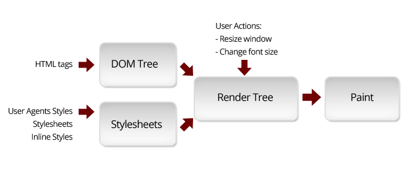
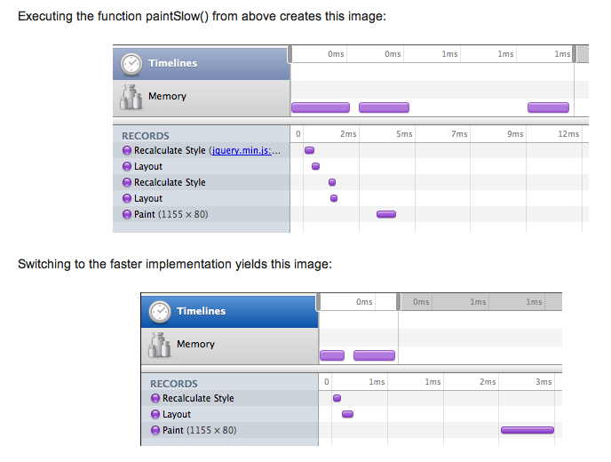

Damián Méndez Romera
Damián Méndez Romera
@typeofit
Agenda
- Reflows
- Timeline
- Event Debugging
- Profiling
- Instrumentación
¿Por qué?
Reflows
Reflows

Reflows in action
Mas información
- http://gent.ilcore.com/2011/03/how-not-to-trigger-layout-in-webkit.html
- http://blog.mozilla.org/gen/2009/04/09/how-to-make-your-own-gecko-reflow-video/
- http://ajaxian.com/archives/when-does-javascript-trigger-reflows-and-rendering
- http://paulirish.com/2011/dom-html5-css3-performance/
Algunas propiedades que causan un reflow
- clientHeight/Width clientLeft/Top
- getBoundingClientRect()
- scrollHeight/Width scrollLeft/Top
- window.scrollTo
- Lista completa: http://goo.gl/SZ4WV
¿Como disminuir la cantidad de reflows?
function paintSlow() {
var left1 = $('#elem1').css('left');
$('#otherElem1').css('left', left);
var left2 = $('#elem2').css('left');
$('#otherElem2').css('left', left);
}
function paintFast() {
var left1 = $('#elem1').css('left');
var left2 = $('#elem2').css('left');
$('#otherElem1').css('left', left);
$('#otherElem2').css('left', left);
}

Estrategias
Usar display:none
Usar visibility:hidden
Clonar un nodo
$(...).detach()
Timeline
Demo Offline:
./hovercard/goog.ui.HoverCard.html
Demo Online:
http://closure-library.googlecode.com/svn/trunk/closure/goog/demos/hovercard.html
Event Debugging
Profiling
Demo de Memory Leaks Offline:
./detached-dom/index.html
Instrumentación
Instrumentación
- ¿Qué es?
- ¿Para qué?
- ¿Cómo?
Google Closure Compiler
MyClass.prototype.myMethod = function() {
if (DEBUG_MODE) {
console.log('MyClass::myMethod', new Date().getTime());
}
// ... method code ...
}
Cons:
- No es apto para la gran mayoría de los proyectos
- No hay metadata automatica (linea, columna, nombre de la función, etc.)
Esprima!
from Latin: "to espress yourself"
esprima.org
Demo Offline:
./esprima/index.html
Casos de uso
- Asistencia en el código: outline view, content assist
- Modificación: Esmorph, Code Painter, node-falafel
- Análisis de Cobertura: node-cover, coveraje, CoverJS
- Generación de código: escodegen
- Compilación source-to-source ("transpilers"): Marv, LLJS